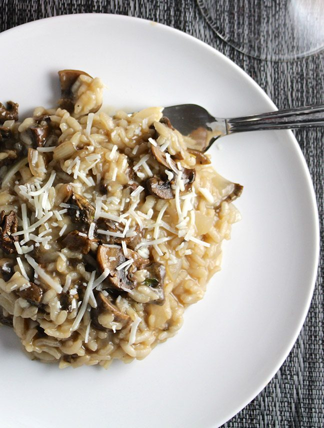

Risotto ai funghi

Description
One morning, when Gregor Samsa woke from troubled dreams, he found himself transformed in his bed into a horrible vermin. He lay on his armour-like back, and if he lifted his head a little he could see his brown belly, slightly domed and divided by arches into stiff sections.
The bedding was hardly able to cover it and seemed ready to slide off any moment. His many legs, pitifully thin compared with the size of the rest of him, waved about helplessly as he looked. "What's happened to me? " he thought. It wasn't a dream.
His room, a proper human room although a little too small, lay peacefully between its four familiar walls. A collection of textile samples lay spread out on the table - Samsa was a travelling salesman - and above it there hung a picture that he had recently cut out of an illustrated magazine and housed in a nice, gilded frame. It showed a lady fitted out with a fur hat and fur boa who sat upright, raising a heavy fur muff that covered the whole of her lower arm towards the viewer. Gregor then turned to look out the window at the dull weather. Drops
Ingredients
- Risotto rice (Carnaroli, Vialone nano, Arborio, etc)
- Fresh mushrooms
- Onion
- Olive oil
- Butter
- Mild vegetable stock
- Dry white wine
- Salt
- Pepper
- Parmesan
- optional: Garlic
- optional: Fresh parsley or thyme
Steps
- Finely chop the onion and the garlic
- Chop the mushrooms as follows:
- Finely chop some of them, preferably the stems and a little more of the body
- Roughly chop the rest in small/medium bites, perhaps leaving some medium/large bites from the heads
- Roughly chop the fresh parsley (or pluck the fresh thyme) and set aside to garnish at the end
- Warm up the vegetable stock to medium/high temperature, but do not bring it to boil. Adjust the salt if needed
- Put a casserole on low/medium heat with the oil and most of the butter. Leave a teaspoon of butter aside
- Add the onion and the garlic, fry them gently until the onion gets transparent
- Add the mushrooms all at once, raise the heat a little and fry them gently for few minutes. Pay attention that the finely chopped ingredients (onion, garlic, and mushrooms) can still cook another few minutes at high temperature without burning
- Raise the heat to medium/high and add the rice. Stir gently for a minute or two while it roasts and its outer layer becomes slightly transparent.
- Pour the wine in the casserole while gently stirring, simmer until reduced
- Add two or three ladles of warm stock, reduce the heat to medium/low (but enough to keep the water boiling), stir gently but as little as possible
- Keep adding warm stock so that the rice has enough liquid to cook but also that most of it will be absorbed or evaporated by the end of the cooking time
- A minute or two before the rice is done, add the butter and most of the parmesan (set aside some of it for the plates). Stir strongly, cover the casserole, and set it aside for a couple of minutes. Do not leave it on the hot stove.
- Add pepper and the rest of the parmesan, and garnish with the fresh herb before serving